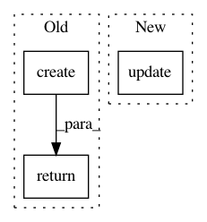

71462da0cdb88c88539afefc4c01ff810b994200,src/python/pants/base/build_configuration.py,BuildConfiguration,registered_aliases,#BuildConfiguration#,42
Before Change
It"s useful for generating things like
http://pantsbuild.github.io/build_dictionary.html
return BuildFileAliases.create(
targets=self._target_aliases,
objects=self._exposed_objects,
addressables=self._addressable_alias_map,
context_aware_object_factories=self._exposed_context_aware_object_factories)
def register_aliases(self, aliases):
Registers the given aliases to be exposed in parsed BUILD files.
for alias, target_type in aliases.targets.items():
After Change
:rtype: :class:`pants.base.build_file_aliases.BuildFileAliases`
target_factories_by_alias = self._target_by_alias.copy()
target_factories_by_alias.update(self._target_macro_factory_by_alias)
return BuildFileAliases.create(
targets=target_factories_by_alias,
objects=self._exposed_object_by_alias.copy(),
context_aware_object_factories=self._exposed_context_aware_object_factory_by_alias.copy())
In pattern: SUPERPATTERN
Frequency: 3
Non-data size: 3
Instances
Project Name: pantsbuild/pants
Commit Name: 71462da0cdb88c88539afefc4c01ff810b994200
Time: 2015-09-08
Author: john.sirois@gmail.com
File Name: src/python/pants/base/build_configuration.py
Class Name: BuildConfiguration
Method Name: registered_aliases
Project Name: pantsbuild/pants
Commit Name: ac0b7e4b3d8267c682b2e821f8db592ca94103e3
Time: 2018-03-18
Author: stuhood@twitter.com
File Name: src/python/pants/engine/build_files.py
Class Name:
Method Name: spec_to_globs
Project Name: snorkel-team/snorkel
Commit Name: da0dd1052decff8fe2fd6d46a49992a91d7f232f
Time: 2016-09-02
Author: stephenhbach@gmail.com
File Name: snorkel/annotations.py
Class Name: CandidateFeaturizer
Method Name: create